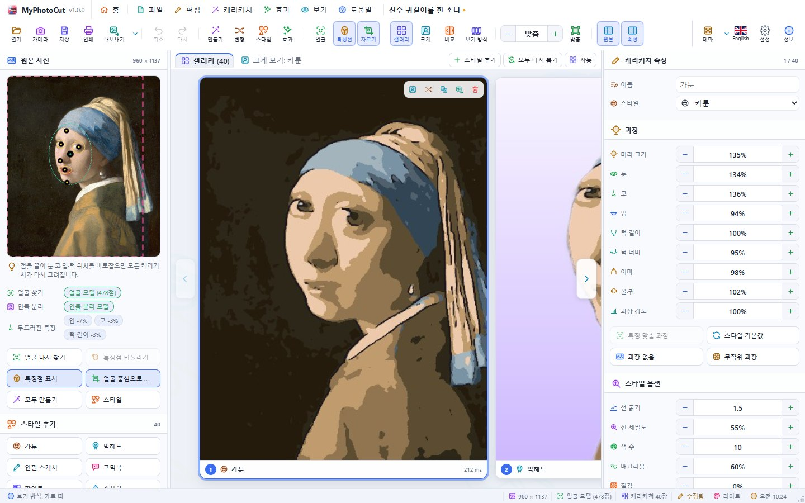
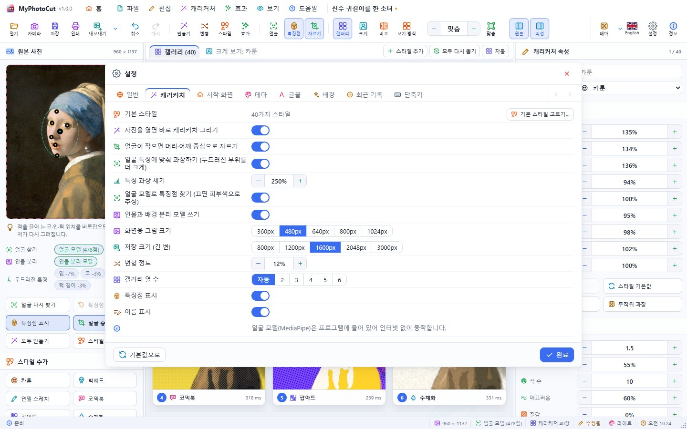
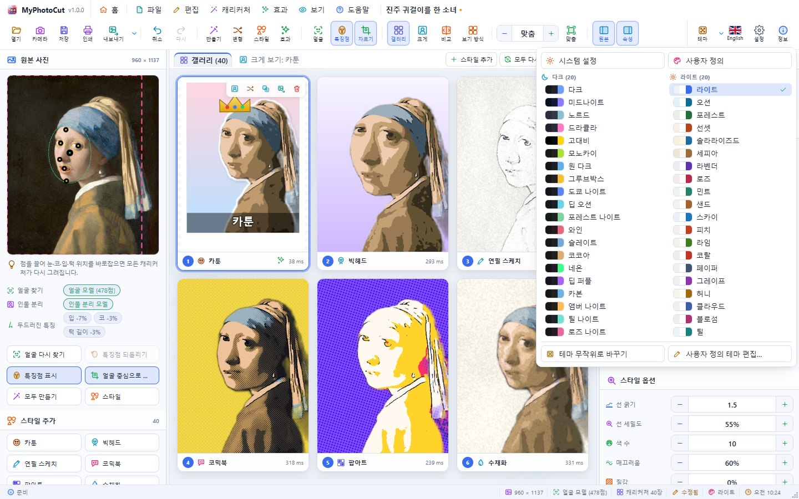
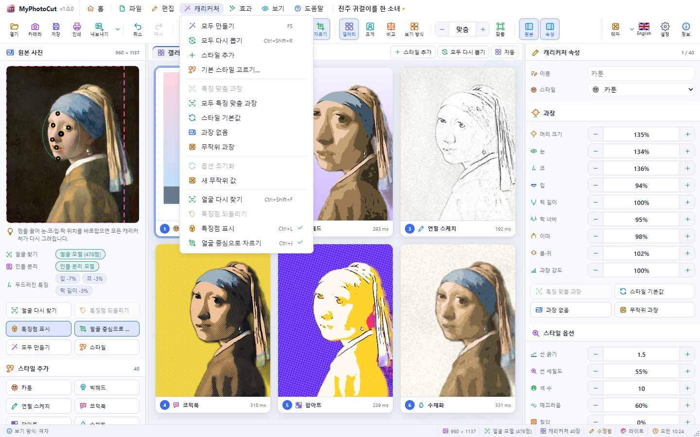
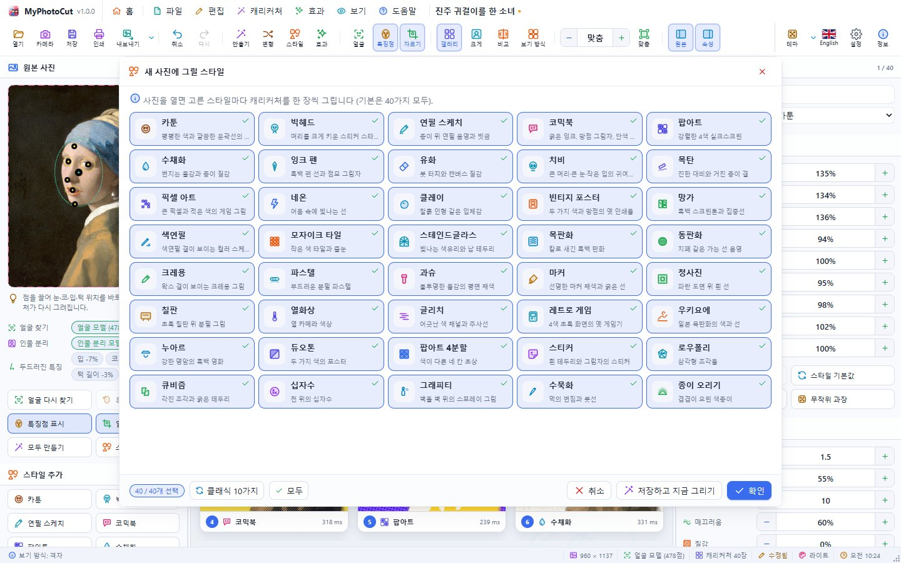

MyPhotoCut 사용 설명서
사진 한 장으로 40가지 화풍의 캐리커처를 한 번에 만드는 프로그램입니다. Windows · macOS · Linux 데스크톱 앱과 웹 브라우저에서 똑같이 동작합니다.
1. 시작하기
- 사진 열기: 툴바의 열기, 시작 화면의 사진 열기, 사진 파일을 창에 끌어 놓기,
Ctrl+V(클립보드의 사진) 중 아무 방법이나 씁니다. - 카메라: 툴바의 카메라로 웹캠 사진을 찍습니다.
스페이스로 바로 찍거나 3초 뒤 찍기를 누릅니다. - 예제 사진: 시작 화면의 예제 사진(모나리자, 진주 귀걸이를 한 소녀, 반 고흐, 아인슈타인, 마리 퀴리, 링컨, 더글러스, 베토벤, 모차르트, 흰 담비를 안은 여인 — 모두 퍼블릭 도메인)을 누르면 바로 시작합니다.
사진을 열면 얼굴과 눈·코·입을 자동으로 찾고(얼굴 모델 478점, 인터넷 없이 동작), 고른 스타일(기본 40가지)마다 캐리커처를 한 장씩 그립니다.
열 수 있는 형식
JPEG · PNG · WebP · AVIF · GIF · BMP · ICO · SVG(브라우저가 읽음), TIFF · TGA · PSD · QOI · PPM/PGM/PBM(프로그램이 직접 해독), .mypcut 프로젝트. HEIC는 환경에 따라 열리지 않을 수 있습니다.
2. 화면 구성


| 영역 | 내용 |
|---|---|
| 메뉴 막대 | 프로그램 이름·버전, 홈(시작 화면 ↔ 작업 화면 전환), 파일·편집·캐리커처·효과·보기·도움말, 열린 사진 이름, 창 단추 |
| 툴바 | 아이콘 + 이름. 창이 좁으면 이름만 숨겨집니다 |
| 왼쪽: 원본 사진 | 사진과 얼굴 특징점, 얼굴을 찾은 방법, 얼굴 다시 찾기·특징점 되돌리기·자르기, 스타일 추가 단추 40개 |
| 가운데 | 갤러리(모든 캐리커처) 또는 크게 보기(원본 비교, 확대/축소, 필름 띠) |
| 오른쪽: 캐리커처 속성 | 이름·스타일, 과장(머리·눈·코·입·턱·이마·볼), 스타일 옵션, 효과 |
| 상태 표시줄 | 알림, 그리는 중인 장 수, 사진 크기, 얼굴 찾기 방법, 테마, 시계, 창 크기 조절 손잡이 |
3. 얼굴 특징점 바로잡기
왼쪽 패널의 두드러진 특징은 평균 얼굴과 비교한 차이(예: 입 +18%)입니다. 특징 맞춤 과장은 이 차이를 더 키워 그 사람다운 캐리커처를 만듭니다(설정 › 캐리커처에서 켜고 끄고 세기를 조절).
왼쪽 사진 위의 점(얼굴 중심·두 눈·코·입·턱·이마)을 끌면 모든 캐리커처가 다시 그려집니다. 특징점 되돌리기는 자동으로 찾은 위치로, 얼굴 다시 찾기는 처음부터 다시 찾습니다.
얼굴이 작은 사진(전신 사진 등)은 얼굴 중심으로 자르기(Ctrl+J)가 머리·어깨만 잘라 크게 그립니다. 잘린 부분은 사진 위에 분홍 점선 상자로 보입니다.
4. 캐리커처 다루기
- 선택: 카드를 클릭하거나
←→. - 크게 보기: 카드를 두 번 클릭하거나
Enter, 갤러리로는Esc. - 원본과 비교(
Ctrl+K): 가운데 선을 끌어 원본과 캐리커처를 비교합니다. - 보기 방식(툴바,
Ctrl+3): 격자 · 큰 격자 · 작은 타일 · 목록(정보 포함) · 가로 띠. - 변형 만들기(
Ctrl+R): 같은 스타일로 조금 다른 한 장을 더 만듭니다. 모두 다시 뽑기는 모든 캐리커처를 새로 뽑습니다. - 복제(
Ctrl+D), 이름 바꾸기(F2), 삭제(Delete). - 모두 만들기(
F5): 고른 스타일로 새로 그립니다(바꾸기 또는 뒤에 더하기). - 기본 스타일 고르기: 새 사진에 그릴 스타일을 고릅니다(전체 40가지 / 클래식 10가지).




과장
머리 크기, 눈, 코, 입, 턱 길이, 턱 너비, 이마, 볼·귀를 50~220%로, 과장 강도로 전체를 0~200%로 조절합니다. 스타일 기본값 / 과장 없음 / 무작위 과장 단추가 있습니다.
스타일 옵션
선 굵기, 선 세밀도, 색 수, 매끄러움, 질감, 배경(스타일 · 사진 · 흰색), 무작위 값.
5. 스타일 40가지
카툰, 빅헤드, 연필 스케치, 코믹북, 팝아트, 수채화, 잉크 펜, 유화, 치비, 목탄, 픽셀 아트, 네온, 클레이, 빈티지 포스터, 망가, 색연필, 모자이크 타일, 스테인드글라스, 목판화, 동판화, 크레용, 파스텔, 과슈, 마커, 청사진, 칠판, 열화상, 글리치, 레트로 게임, 우키요에, 누아르, 듀오톤, 팝아트 4분할, 스티커, 로우폴리, 큐비즘, 십자수, 그래피티, 수묵화, 종이 오리기.
6. 효과

효과 추가로 선택한 캐리커처에 효과를 쌓습니다. 효과마다 켜기/끄기, 순서 바꾸기, 삭제가 있고 모두에 적용, 효과 복사/붙여넣기로 다른 캐리커처에도 씁니다.
- 그림 효과: 색 조정, 배경 바꾸기(단색·그라데이션·흐림·집중선·물방울), 인물 테두리, 비네팅, 필름 입자, 세피아, 흑백, 듀오톤, 반전, 흐림, 선명하게, 글로우, 엠보스, 포스터화, 망점, 모자이크
- 꾸미기: 액자(단순·둥근·폴라로이드·필름·우표), 문구, 말풍선, 스티커(왕관·선글라스·하트·별·반짝이·꽃)
7. 저장과 내보내기


- 인쇄(
Ctrl+P): 프린터와 매수, 인쇄할 것(선택·모두·모음 시트), 한 장에 넣을 수(1·2·4·6·9), 용지·방향·여백·맞춤·간격·머리글/바닥글을 정하고 미리보기를 보며 출력합니다. Windows에서는 대화상자 없이 고른 프린터로 바로 인쇄합니다.
- 프로젝트 저장(
Ctrl+S): 사진·특징점·모든 캐리커처와 효과를.mypcut파일 하나에 담습니다. - 이미지로 저장(
Ctrl+E): 선택한 캐리커처 / 모두(ZIP) / 모음 시트를 고르고, 형식과 크기(긴 변 800~3000px), 품질을 정합니다. 저장할 때는 화면용보다 큰 해상도로 다시 그립니다. - 저장 형식: PNG, JPEG, WebP, AVIF(지원 환경), GIF, BMP, TIFF, TGA, PPM, QOI, ICO(최대 256px), PDF, SVG.
- 이미지 복사(
Ctrl+Shift+C).
8. 설정




- 일반: 언어, 세션 복원, 삭제 확인, 시계, 상태 표시줄
- 캐리커처: 기본 스타일, 열면 바로 그리기, 자동 자르기, 얼굴 모델·인물 분리 모델 사용, 화면용 그림 크기(360~1024px), 저장 크기, 변형 정도, 갤러리 열 수
- 시작 화면, 테마(다크·라이트·사용자 정의), 글꼴, 배경(움직이는 배경 16종·그림), 최근 기록, 바로 가기 키
9. 바로 가기 키
| 키 | 동작 | 키 | 동작 |
|---|---|---|---|
| Ctrl+O | 열기 | Ctrl+Shift+O | 카메라 |
| Ctrl+S / Ctrl+Shift+S | 저장 / 다른 이름 | Ctrl+E / Ctrl+Shift+E | 이미지 저장 / 모두 저장 |
| Ctrl+Z / Ctrl+Y | 실행 취소 / 다시 | F5 | 모두 만들기 |
| Ctrl+R / Ctrl+Shift+R | 변형 / 모두 다시 뽑기 | Ctrl+D | 복제 |
| Ctrl+1 / 2 / 3 | 갤러리 / 크게 / 보기 방식 | Ctrl+K | 원본 비교 |
| Ctrl+= / Ctrl+- / Ctrl+0 | 확대 / 축소 / 맞춤 | Ctrl+J | 얼굴 중심 자르기 |
| Ctrl+Shift+F | 얼굴 다시 찾기 | Ctrl+L | 특징점 표시 |
| Ctrl+Shift+H | 시작 화면 | Ctrl+, | 설정 |